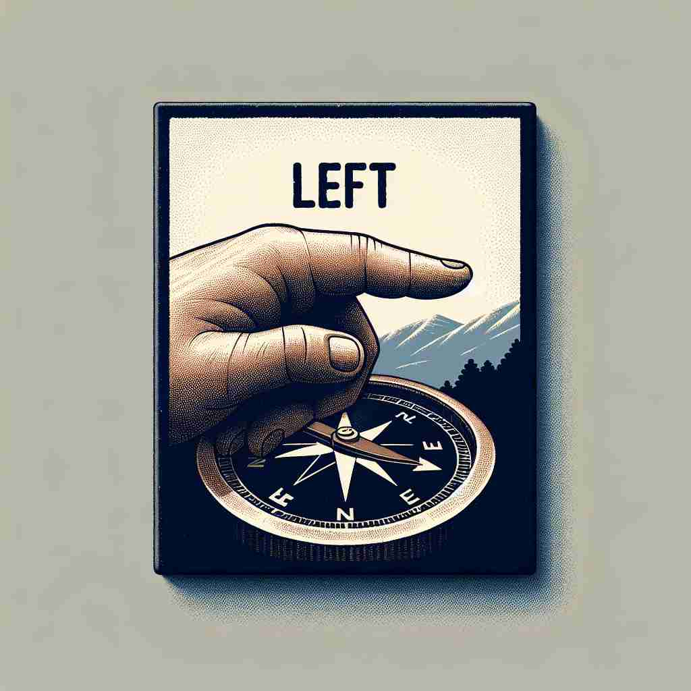

💬 The teacher told the students to turn left when they enter the room. 老师告诉学生们进入教室时向左转。

💬 Please keep to the left side of the road when driving. 请在驾驶时保持靠左侧行驶。
💬 He is trying on the left shoe in the store. 他在店里试穿左脚鞋。

💬 To find the trail, you need to turn left at the tree. 要找到小径，你需要在树那儿左转。
🧠 想象一个指南针，'left' 就是西边的方向。从这个核心含义，我们可以联想到'剩余的'（如同不常用的左手），'离开'（留下的在左边），政治上的'左派'（坐在左边），以及'笨拙的'（不习惯用左手）。通过这个方向性的核心概念，你可以轻松记住 'left' 的多重含义。
🔈 [left]
🗝️ n./adj./adv. the side or direction that is west when one faces north 当人面朝北时,其左侧或方向为西。
🎭 在一个热闹的十字路口，一位游客拿着地图。他站在北面，问一位路人如何去最近的咖啡馆。路人微笑着指向左边，说："沿着这条街走，一直在左边。"游客点头，沿着朝西的方向走去。
💬 Turn left at the next intersection. 在下一个交叉口左转。
🌳 单词 'left' 是 'leave' 的过去式和过去分词，表示离开或留下。与词根 'leav-'（离去）有关。
🕸️ 1.leave: 离开 2.leaving: 离去 3.reliable: 可靠的（前缀 're-' 表示加强）
💡 可以通过将 'left' 联想为 'leave' 的过去，通过离开的动作留下痕迹来记忆。